38 Multiple Regression in Audit
In Chapter 37 we explained the office expenses of block offices by one driver, their staff strength. That model found one of the two offices we had planted. It missed the other. It also pointed to several offices in the hills which may have done nothing wrong. One driver is rarely enough. The expenses of an office also depend on the beneficiaries it serves and on the terrain it covers.
An auditor meets this in most data. The cost of a road depends on its width, the terrain, the lead and the price of bitumen. The salary bill of an office depends on its staff and on the class of its city, which fixes the house rent allowance. Multiple regression lets us use all these drivers together. It gives a fairer expected amount for every unit. The units which spend more than expected then stand out more clearly, and innocent units drop away.
We end the chapter with the question we posed at the start of Chapter 37. Which offices spend much more on salary than their staff strength explains? That is where ghost employees hide.
In this chapter we will learn to
- use several predictors together, including categories like terrain, and interactions,
- detect predictors which repeat each other’s information (multi-collinearity),
- avoid being misled by a hidden variable (Simpson’s paradox), and
- finally, flag offices which spend more than expected, and measure the excess in rupees.
38.1 Prerequisites
We use the same packages as in Chapter 37, and three more. car calculates the variance inflation factor. GGally draws correlation plots and moderndive draws parallel slopes.
38.2 The block office data
We continue with the office expenses of block offices, described in Section 37.2. For each office we know its district and terrain, its staff in position and sanctioned posts, the floor area of its building, the population of its block and the beneficiaries it serves. We also know its office expenses for 2023-24, in ₹ lakh. Two offices have expenses inflated by ₹11 lakh each, as if vehicle hire was paid for vehicles never used. The code below creates exactly the same data as before.
Code to create the block office data
set.seed(4012)
n <- 120
district_terrain <- c(Etawah = "Plain", Sitapur = "Plain", Firozpur = "Plain",
Almora = "Hilly", Chamba = "Hilly",
Bastar = "Tribal", Mayurbhanj = "Tribal")
bdo <- tibble(
office_id = sprintf("BDO-%03d", 1:n),
district = sample(names(district_terrain), n, replace = TRUE,
prob = c(0.17, 0.17, 0.16, 0.13, 0.12, 0.13, 0.12))
) |>
mutate(
terrain = factor(district_terrain[district], levels = c("Plain", "Hilly", "Tribal")),
# offices in the hills and tribal areas are smaller
staff = round(case_when(terrain == "Plain" ~ runif(n, 22, 55),
terrain == "Hilly" ~ runif(n, 12, 38),
TRUE ~ runif(n, 16, 44))),
sanctioned = round(staff / runif(n, 0.80, 0.95)),
# bigger offices have bigger buildings
area_sqm = round(120 + 11 * staff + rnorm(n, 0, 45)),
population = round(runif(n, 60, 200) * if_else(terrain == "Plain", 1.2, 0.8)),
beneficiaries = round(population * runif(n, 0.25, 0.35), 1),
# office expenses in lakh, driven by staff, beneficiaries and terrain
office_exp = round(5 + 0.45 * staff + 0.12 * beneficiaries +
c(Plain = 0, Hilly = 6, Tribal = 3.5)[as.character(terrain)] +
rnorm(n, 0, 1.6), 2)
)
# Planted cases. Vehicle hire of Rs 11 lakh paid without any vehicle used
planted <- c("BDO-027", "BDO-088")
bdo <- bdo |>
mutate(office_exp = if_else(office_id %in% planted, office_exp + 11, office_exp))We will compare our new models with the model of staff alone, lin_reg1, from Chapter 37. So let us fit it again.
lin_reg1 <- lm(office_exp ~ staff, data = bdo)38.3 Multiple linear regression
In multiple linear regression, several independent variables together explain the dependent variable. The regression equation becomes
\[ y = \beta_0 + \beta_1x_1 + \beta_2x_2 + \beta_3x_3 + ... + \epsilon \tag{38.1}\]
where \(x_1\), \(x_2\), \(x_3\) …, \(x_n\) are the \(n\) independent variables and \(y\) is the dependent variable as usual.
With two predictors, this equation is no longer a line but a flat plane in three dimensions. With more predictors, it is a hyperplane, which we cannot draw. So we usually look at the predictors one at a time, or use correlation plots.
As we noted in Chapter 37, there is one more assumption now. The independent variables should not be strongly related to each other, that is, there should be no multi-collinearity. Let us build an example. We just add the predictors to the formula using the + operator.
Example 2. Staff strength alone explained about 60% of the variation in office expenses. Let us try to explain office expenses using staff strength staff, floor area of the building area_sqm and the number of beneficiaries beneficiaries together. First, let us visualise each relationship separately, in Figure 38.1.
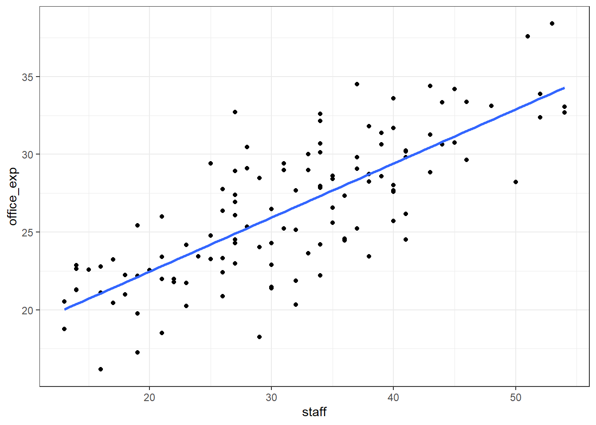
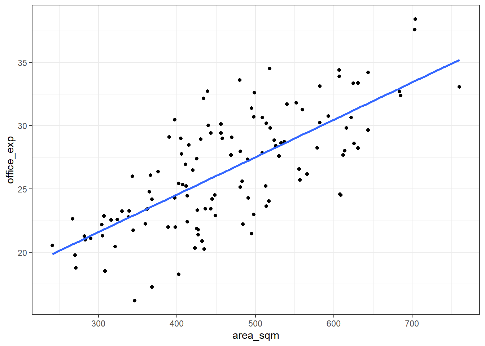
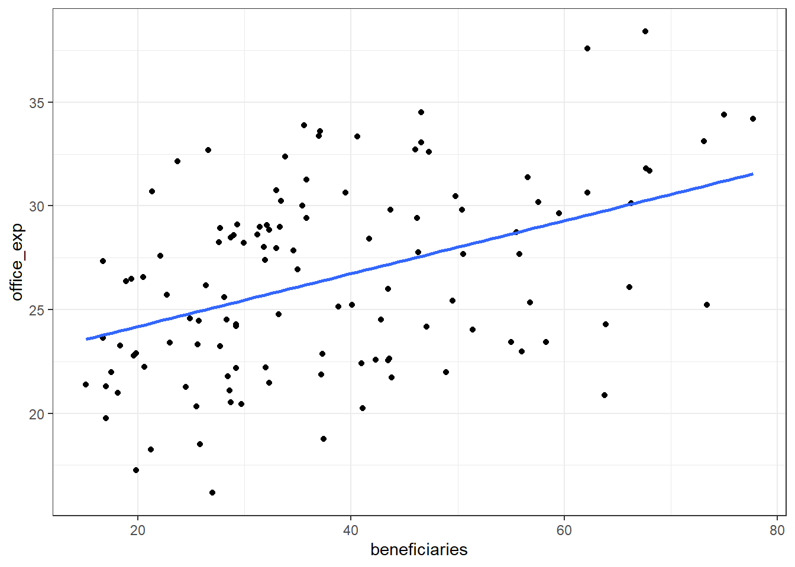
Let us also visualise the correlation between all these variables. See Figure 38.2.
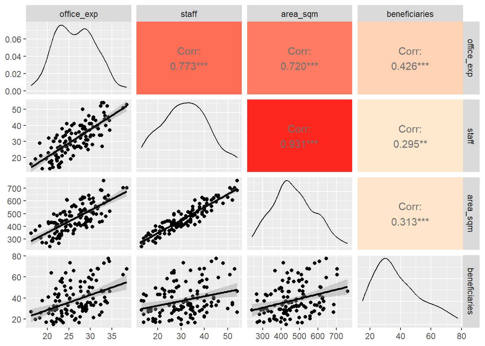
Notice that two of the predictors are strongly correlated with each other too. Staff strength and floor area have a correlation of 0.93. Offices with more staff need bigger buildings. Keep this in mind. Now let us build the model.
Call:
lm(formula = office_exp ~ ., data = data2)
Residuals:
Min 1Q Median 3Q Max
-6.447 -1.860 0.174 1.697 7.215
Coefficients:
Estimate Std. Error t value Pr(>|t|)
(Intercept) 14.278375 1.263300 11.302 < 2e-16 ***
staff 0.343135 0.068615 5.001 2.05e-06 ***
area_sqm -0.002411 0.006299 -0.383 0.702572
beneficiaries 0.065658 0.017518 3.748 0.000279 ***
---
Signif. codes: 0 '***' 0.001 '**' 0.01 '*' 0.05 '.' 0.1 ' ' 1
Residual standard error: 2.762 on 116 degrees of freedom
Multiple R-squared: 0.6407, Adjusted R-squared: 0.6314
F-statistic: 68.96 on 3 and 116 DF, p-value: < 2.2e-16In the formula, we used . instead of naming all the variables. The . is a shorthand for “all other columns of the data”. There is now one slope for each predictor and one intercept. The equation can be written as Equation 38.2.
\[ \text{Office expenses} = 14.2784 + 0.3431 \cdot \text{Staff} - 0.002411 \cdot \text{Area} + 0.0657 \cdot \text{Beneficiaries} \tag{38.2}\]
Interpretation. The slopes of staff and beneficiaries are positive, so office expenses rise with both. Each slope is read keeping the other variables constant. For example, if two offices have the same floor area and the same number of beneficiaries, the one with 1 more employee spends ₹0.343 lakh more a year. Similarly, 1,000 more beneficiaries add ₹0.066 lakh, for the same staff and floor area. “Keeping other variables constant” is important. If the other variables also change, the effect on expenses is different.
Results. The model explains about 64% of the variation in office expenses (Multiple R-squared), against 60% with staff alone. Adjusted R-squared is a little lower, at 63%, after the penalty for three predictors. The F-test p-value is very small, so at least one slope is not zero.
Look at area_sqm, however. On its own, floor area is clearly related to office expenses (Figure 38.1, middle). In this model, its slope is -0.0024, slightly negative, as if a bigger building cost less to run. Its p-value is 0.70, not significant at all. This is because area_sqm carries almost the same information as staff. Once staff is in the model, area has little new to say, and its slope is left to chance. We could remove area_sqm and re-run the model. We will come back to this when we discuss multi-collinearity.
38.4 Including categorical or factor variables in lm
So far, both our response variable and our predictors were numeric. But what if a predictor is categorical, like the terrain of a block, the city class of an office, or the type of a contract?
In such a case, we should make sure that the categorical variable is of type factor before building the model. We learnt about factors in Chapter 24. The first level of the factor matters, as we will see. We created terrain with the levels in the order Plain, Hilly, Tribal.
Example 3. Let us try to explain office_exp by terrain alone. Offices in the hills and tribal areas need more vehicle hire to cover the same block, so we would expect them to spend more. terrain is already a factor, so we need not convert it. Before moving on, let us visualise the relationship. Box plots are best suited here.
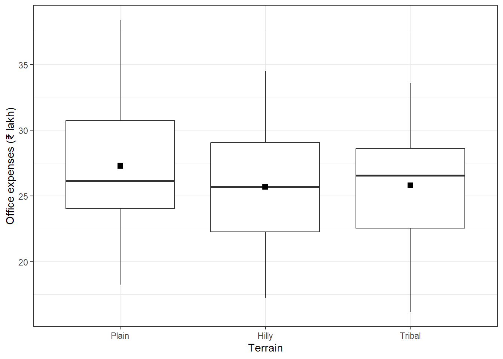
Now let us build the model.
Call:
lm(formula = office_exp ~ terrain, data = bdo)
Residuals:
Min 1Q Median 3Q Max
-9.6503 -3.3458 0.0324 3.3282 11.1032
Coefficients:
Estimate Std. Error t value Pr(>|t|)
(Intercept) 27.3068 0.5985 45.622 <2e-16 ***
terrainHilly -1.6142 0.9792 -1.648 0.102
terrainTribal -1.4965 1.0307 -1.452 0.149
---
Signif. codes: 0 '***' 0.001 '**' 0.01 '*' 0.05 '.' 0.1 ' ' 1
Residual standard error: 4.519 on 117 degrees of freedom
Multiple R-squared: 0.02967, Adjusted R-squared: 0.01308
F-statistic: 1.789 on 2 and 117 DF, p-value: 0.1718We now got one intercept and two slopes for a single predictor terrain. What happened?
Interpretation. R converts a factor into dummy variables. A dummy variable is 1 when a row belongs to a category and 0 otherwise. Being numeric, the dummies can be used in linear regression as before. The first level of the factor is taken as the baseline. It gets no dummy of its own. terrain has three levels, so it is encoded as two dummy variables. To see this, we can use the contrasts() function.
contrasts(bdo$terrain) Hilly Tribal
Plain 0 0
Hilly 1 0
Tribal 0 1We can also see the actual numbers that went into the model with model.matrix(). Let us look at the first office of each terrain.
first_rows <- match(levels(bdo$terrain), bdo$terrain)
model.matrix(office_exp ~ terrain, data = bdo)[first_rows, ] (Intercept) terrainHilly terrainTribal
2 1 0 0
7 1 1 0
1 1 0 1When the office is in the hills, terrainHilly is 1 and terrainTribal is 0, and the other way round for a tribal area. When both are 0, the office is in the plains, the baseline. That is why there is no separate coefficient for Plain. Now we can write the regression equation as Equation 38.3.
\[ \text{Office expenses} = 27.307 - 1.614 \cdot \text{terrainHilly} - 1.496 \cdot \text{terrainTribal} \tag{38.3}\]
Reading this equation is now easy. For an office in the hills, the predicted expense is 27.307 - 1.614, or 25.693. When both dummy variables are zero, the predicted expense is just the intercept. So the intercept is the prediction for the baseline level, Plain, and each slope is the difference from the baseline. If we remove the intercept by adding - 1 to the formula, R gives us one coefficient for each level directly.
Call:
lm(formula = office_exp ~ terrain - 1, data = bdo)
Residuals:
Min 1Q Median 3Q Max
-9.6503 -3.3458 0.0324 3.3282 11.1032
Coefficients:
Estimate Std. Error t value Pr(>|t|)
terrainPlain 27.3068 0.5985 45.62 <2e-16 ***
terrainHilly 25.6926 0.7750 33.15 <2e-16 ***
terrainTribal 25.8103 0.8391 30.76 <2e-16 ***
---
Signif. codes: 0 '***' 0.001 '**' 0.01 '*' 0.05 '.' 0.1 ' ' 1
Residual standard error: 4.519 on 117 degrees of freedom
Multiple R-squared: 0.9724, Adjusted R-squared: 0.9717
F-statistic: 1376 on 3 and 117 DF, p-value: < 2.2e-16Results. Compare these coefficients with Figure 38.3. They are nothing but the mean office expenses of each terrain, which is logical. The equation without intercept is Equation 38.4.
\[ \text{Office expenses} = 27.307 \cdot \text{terrainPlain} + 25.693 \cdot \text{terrainHilly} + 25.810 \cdot \text{terrainTribal} \tag{38.4}\]
Since these coefficients are not slopes in the true sense, we will call them intercepts in the next examples.
There is a surprise here. Offices in the hills and tribal areas seem to spend less than offices in the plains, not more. And the p-values of the two slopes in lm_fact, 0.10 and 0.15, say that terrain makes no real difference at all. Should we conclude that terrain does not matter? Not yet. We will find the answer in the next section.
Look at the R-squared of the two models. With an intercept it is 0.030. Without an intercept it jumps to 0.972. The fit has not improved at all, since the predictions are exactly the same. Without an intercept, R measures R-squared against zero instead of against the mean, which makes it look much larger. So use - 1 to read the coefficients easily, but compare models using the version with an intercept.
38.4.1 Parallel slopes regression
To understand how a categorical predictor works together with a numeric one, let us build a model step by step.
Example 4. Let us explain office expenses office_exp by staff strength staff and terrain terrain together. Let us visualise the variables first. From Figure 38.4 it is clear that office expenses rise linearly with staff, in all three terrains. Notice also that the offices in the hills and tribal areas are generally smaller.
ggplot(bdo, aes(staff, office_exp)) +
geom_point() +
geom_smooth(method = "lm", se = FALSE, formula = "y ~ x") +
facet_wrap(.~ terrain) +
labs(x = "Staff in position", y = "Office expenses (₹ lakh)") +
theme_bw()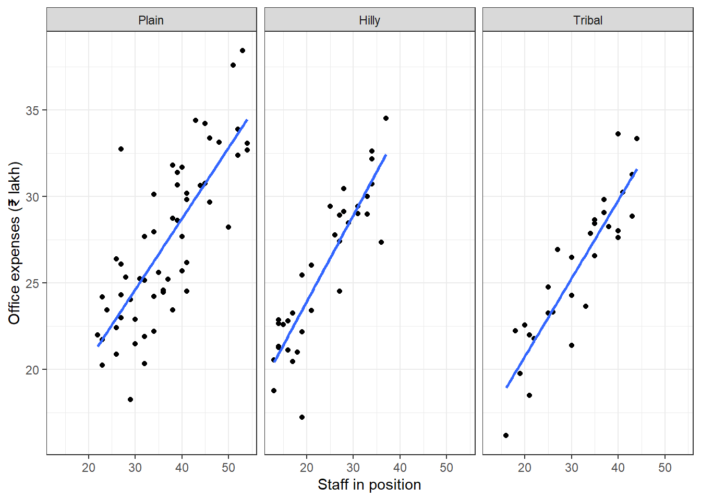
Step 1. Let us first use only the numeric variable staff to explain office expenses, and look at the coefficients. This is the same model as Example 1 of Chapter 37.
(Intercept) staff
15.5084352 0.3477244 We got one intercept and one slope. We can see the line in Figure 38.5 (left).
Step 2. Now let us explain office expenses by terrain only. We also add - 1 to the formula, which removes the common intercept and gives one intercept for each terrain. This is the model lm_fact0 of Example 3. If a variable is not yet a factor, like a year stored as a number, we can convert it inside the formula with factor(). Now see the coefficients.
factor(terrain)Plain factor(terrain)Hilly factor(terrain)Tribal
27.30684 25.69265 25.81034 We got one intercept for each terrain. As Figure 38.5 (right) shows, these are nothing but the mean expenses for each terrain. The three means are close to each other.


Step 3. Now we build the complete model with both variables together, and look at the coefficients.
staff terrainPlain terrainHilly terrainTribal
0.4416366 11.1599895 15.3011985 12.0282383 There is one slope for the numeric variable and a separate intercept for each terrain. If we draw these, we get three parallel lines with the same slope. See Figure 38.6.
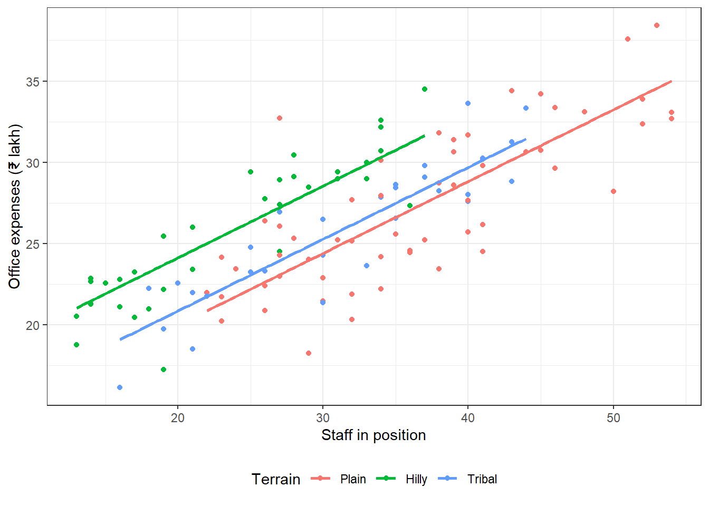
This is also clear from the equation, Equation 38.5.
\[ \text{Office expenses} = 0.4416 \cdot \text{Staff} + 11.1600 \cdot \text{Plain} + 15.3012 \cdot \text{Hilly} + 12.0282 \cdot \text{Tribal} \tag{38.5}\]
For any office, one of the three dummy variables is 1 and the others are 0. The one with 1 acts as the intercept, but the slope stays the same. In other words, whatever the terrain, office expenses change with staff at the same rate.
Notice something interesting. In Step 2, the three terrains had almost the same mean expenses. But now, for the same staff strength, an office in the hills spends about ₹4.1 lakh a year more than an office in the plains. An office in a tribal area spends about ₹0.9 lakh more. The difference was hidden because offices in the hills are smaller on average (23.5 staff against 36.6 in the plains). This is the power of multiple regression. It separates the effect of one variable from another. It also answers the surprise of Example 3. Terrain does matter, once we compare offices of the same size.
But is it right to force the same slope on all terrains? Perhaps each extra employee in the hills costs more, because each one travels more. How do we allow for that? The answer is interaction, discussed next.
38.4.2 Extending multiple linear regression by including interactions
The parallel slopes model forced a common slope on each category. That is not always the best option.
Example 4, continued. In the same example, we can allow an interaction between the two predictors using the operator : in the formula.
staff terrainPlain terrainHilly terrainTribal
0.41006413 12.31432196 13.90042255 11.71979650
staff:terrainHilly staff:terrainTribal
0.09110541 0.04145620 Notice the two extra coefficients. Each is the change in slope when we move from the baseline terrain, Plain, to Hilly or to Tribal. So the model now has a different slope for each terrain. See Figure 38.7.
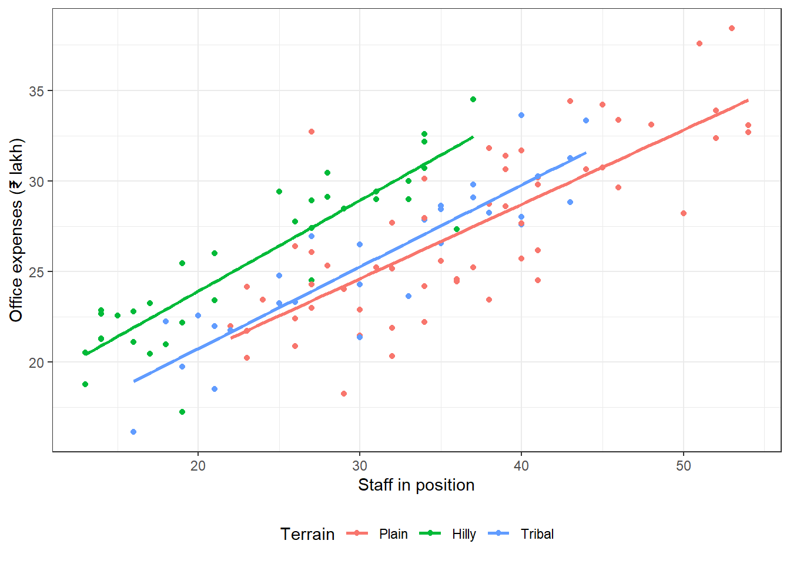
Let us see the summary.
summary(new_model)
Call:
lm(formula = office_exp ~ staff + terrain + staff:terrain - 1,
data = bdo)
Residuals:
Min 1Q Median 3Q Max
-6.1826 -1.5569 0.1208 1.5467 9.3339
Coefficients:
Estimate Std. Error t value Pr(>|t|)
staff 0.41006 0.03737 10.972 < 2e-16 ***
terrainPlain 12.31432 1.40597 8.759 2.12e-14 ***
terrainHilly 13.90042 1.37275 10.126 < 2e-16 ***
terrainTribal 11.71980 1.78908 6.551 1.72e-09 ***
staff:terrainHilly 0.09111 0.06685 1.363 0.176
staff:terrainTribal 0.04146 0.06680 0.621 0.536
---
Signif. codes: 0 '***' 0.001 '**' 0.01 '*' 0.05 '.' 0.1 ' ' 1
Residual standard error: 2.499 on 114 degrees of freedom
Multiple R-squared: 0.9918, Adjusted R-squared: 0.9914
F-statistic: 2294 on 6 and 114 DF, p-value: < 2.2e-16We may write the equation now (Equation 38.6).
\[ \begin{aligned} \text{Office expenses} = {} & 0.4101 \cdot \text{Staff} + 12.3143 \cdot \text{Plain} + 13.9004 \cdot \text{Hilly} + 11.7198 \cdot \text{Tribal} \\ & + 0.0911 \cdot \text{Staff} \cdot \text{Hilly} + 0.0415 \cdot \text{Staff} \cdot \text{Tribal} \end{aligned} \tag{38.6}\]
So for offices in the hills, the slope of staff is \(0.4101 + 0.0911\), or 0.5012. But look at the p-values of the two interaction terms, 0.18 and 0.54. They are far above 0.05. So the data does not give us any real evidence that the slopes differ between the terrains. The three lines in Figure 38.7 are nearly parallel too. Here the simpler parallel slopes model is good enough. Always check whether an interaction is significant before reading meaning into it. We will see an interaction which does matter in Section 38.9.
We can add as many interactions as we like using :. When there are many, we can use another shorthand, *. So x*z means x + z + x:z, and x*z*w means x + z + w + x:z + x:w + z:w + x:z:w. It does not change the model, but saves a lot of typing.
38.5 Multi-collinearity and the variance inflation factor (VIF)
Multi-collinearity means that the predictor variables are strongly related to each other. This creates a problem. When two predictors move together, the model cannot tell which of them is really affecting \(y\). The coefficient estimates become unstable. A small change in the data can change them a lot, sometimes even flip their sign. Their standard errors become large, so useful variables may look insignificant. We saw this with area_sqm in Example 2.
Note that multi-collinearity does not spoil the predictions of the model much. It spoils our ability to interpret the individual coefficients. For an auditor, who usually wants to explain a finding, that matters.
There are many ways to detect multi-collinearity. One is to use correlation plots, as in Figure 38.2. Another is the Variance Inflation Factor or VIF. To find the VIF of a predictor, we regress it on all the other predictors and note the \(R^2\) of that regression. The VIF score thus tells us how well a predictor is explained by the other predictors.
\[ {VIF} = \frac{1}{1-R^2} \tag{38.7}\]
So the closer this \(R^2\) is to \(1\), the higher the \({VIF}\).
- \(VIF\) starts at \(1\) and has no upper limit.
- \({VIF} = 1\) means the predictor is not related to the other predictors at all.
- \({VIF}\) above \(5\) is commonly taken to indicate a problem, and above \(10\) a serious one.
In R, we do not have to calculate \({VIF}\) by hand. The function vif() from the package car does it. Let us first check our model of Example 2.
car::vif(lin_reg2) staff area_sqm beneficiaries
7.507741 7.599050 1.109000 The VIFs of staff and area_sqm are 7.5 and 7.6, both above 5. That confirms what we suspected. The VIF of beneficiaries is close to 1, so it brings its own information. Now let us try a model where office expenses are explained by all the numeric columns of our data. Sanctioned posts move with staff in position, and beneficiaries move with the population of the block. We again use the shorthand . for all other variables.
staff sanctioned area_sqm population beneficiaries
46.598673 39.612223 7.630437 16.333157 16.109711 Four predictors here have a VIF above 10. Such a model would be hard to interpret. In practice, we would keep only one predictor from each related pair, the one which makes more business sense. For office expenses, staff in position matters more than sanctioned posts, because vacant posts spend nothing.
Many indicators in government data come in related pairs. Sanctioned posts and staff in position, population and beneficiaries, budget and expenditure, length and cost of a road. Putting both members of a pair in one model rarely helps. Pick the one closer to the actual cause of the expenditure. Chapter 43 shows another way, which combines related indicators into one.
38.6 Audit use case, block offices with inflated expenses
Let us now return to the two block offices we planted. We have learnt a good deal about their data. Office expenses rise with staff and with beneficiaries. Offices in the hills and tribal areas spend more for the same size. Floor area, sanctioned posts and population add little once staff and beneficiaries are in the model. So the model which makes business sense uses staff, beneficiaries and terrain.
Call:
lm(formula = office_exp ~ staff + beneficiaries + terrain, data = bdo)
Residuals:
Min 1Q Median 3Q Max
-5.4439 -1.0171 0.0541 1.1266 9.4715
Coefficients:
Estimate Std. Error t value Pr(>|t|)
(Intercept) 6.86558 1.04020 6.600 1.32e-09 ***
staff 0.42329 0.02250 18.812 < 2e-16 ***
beneficiaries 0.10770 0.01459 7.380 2.68e-11 ***
terrainHilly 5.38553 0.56025 9.613 < 2e-16 ***
terrainTribal 2.62761 0.54161 4.851 3.88e-06 ***
---
Signif. codes: 0 '***' 0.001 '**' 0.01 '*' 0.05 '.' 0.1 ' ' 1
Residual standard error: 2.066 on 115 degrees of freedom
Multiple R-squared: 0.8005, Adjusted R-squared: 0.7936
F-statistic: 115.4 on 4 and 115 DF, p-value: < 2.2e-16All the predictors are significant, and the model explains 80% of the variation in office expenses, against 60% with staff alone. The residual standard error has come down from ₹2.90 lakh to ₹2.07 lakh. Now let us find the offices which spend more than expected, with augment().
# A tibble: 5 × 8
office_id district staff beneficiaries office_exp .fitted excess .std.resid
<chr> <chr> <dbl> <dbl> <dbl> <dbl> <dbl> <dbl>
1 BDO-088 Firozpur 27 46 32.7 23.2 9.47 4.65
2 BDO-027 Sitapur 26 18.9 26.4 19.9 6.47 3.24
3 BDO-074 Mayurbhanj 40 37.1 33.6 30.4 3.19 1.58
4 BDO-115 Etawah 34 33 28.0 24.8 3.15 1.54
5 BDO-010 Firozpur 46 37 33.4 30.3 3.06 1.51Two offices, BDO-088 and BDO-027, have standardised residuals above 3. They are exactly the two offices we planted. Together they spent about ₹15.9 lakh more than expected. No other office comes close.
Why did BDO-027 hide in the model of staff alone, in Chapter 37? Let us compare it under both models.
# A tibble: 2 × 6
model staff beneficiaries office_exp .fitted .std.resid
<chr> <dbl> <dbl> <dbl> <dbl> <dbl>
1 Staff only 26 18.9 26.4 24.5 0.635
2 Staff, beneficiaries, terra… 26 18.9 26.4 19.9 3.24 BDO-027 serves only 18.9 thousand beneficiaries, against an average of 38.0 thousand. An office of its size with so few beneficiaries should spend less than the average. The model with staff alone did not know this. It expected the expenses of an average office of that size, and the inflated bill looked normal against it. Once beneficiaries are in the model, the expected expenses fall, and the inflation stands out.
A model that leaves out an important driver does more than fit badly. It can hide an irregularity, as it hid BDO-027, or point to innocent offices, as it pointed to the offices in the hills. Before trusting the residuals, make sure the model includes every driver which the business suggests.
What would the auditor do next? For each of the two offices, we would call for the vehicle hire bills, the log books of the vehicles and the sanction for hiring them. Bills without matching log book entries, or log books written up in one hand at the end of the year, are common signs of payments for vehicles never used. We would ask the office to explain the excess in writing, and record the model, the flagged offices and the replies in the working papers.
38.7 A complete example, cost of rural road works
Example 5. Let us now go through the whole process on a different audit dataset. A state builds rural roads under a scheme. We have 90 road works completed in five financial years, 2019-20 to 2023-24. For each work we know
-
cost_lakh, the cost per kilometre, in ₹ lakh, -
width_m, the width of the carriageway in metres, -
hilly_pct, the percentage of the road length in hilly terrain, -
lead_km, the distance from the quarry, from which stone is carried, -
rain_cm, the average annual rainfall of the area, in centimetres, -
bitumen_k, the rate of bitumen in the year of the work, in ₹ thousand per tonne, and -
year_no, the year of the work, from 1 for 2019-20 to 5 for 2023-24.
The cost of a road should depend on its width, the terrain, the lead and the price of bitumen. The auditor would like a model of the expected cost per kilometre. Works which cost far more than expected can then be picked for detailed examination of their estimates and measurement books.
Code to create the road works data
set.seed(2411)
n <- 90
roads <- tibble(
work_id = sprintf("RW-%03d", 1:n),
fin_year = sample(2019:2023, n, replace = TRUE),
width_m = sample(c(3, 3.75, 5.5), n, replace = TRUE, prob = c(0.4, 0.4, 0.2)),
hilly_pct = round(100 * rbeta(n, 0.7, 1.8)),
lead_km = round(runif(n, 5, 60)),
rain_cm = round(runif(n, 60, 250))
) |>
mutate(
# bitumen rate rises every year
bitumen_k = round(38 + 3.5 * (fin_year - 2019) + rnorm(n, 0, 1.5), 1),
year_no = fin_year - 2018,
# rainfall has no effect on cost in this data
cost_lakh = round(20 + 9 * width_m + 0.22 * hilly_pct + 0.12 * lead_km +
0.8 * bitumen_k + rnorm(n, 0, 8), 1)
)
# Keep only the response and the predictors, for the model
road_vars <- roads |>
select(cost_lakh, width_m, hilly_pct, lead_km, rain_cm, bitumen_k, year_no)# See the first 6 rows
head(road_vars)# A tibble: 6 × 7
cost_lakh width_m hilly_pct lead_km rain_cm bitumen_k year_no
<dbl> <dbl> <dbl> <dbl> <dbl> <dbl> <dbl>
1 104. 3.75 35 24 91 47 4
2 95.4 3 15 13 102 42.3 3
3 132. 5.5 72 35 240 50.1 4
4 100. 3.75 59 21 164 37.7 1
5 102. 5.5 2 24 200 49.6 4
6 72.2 3 7 23 196 38 1# Build a model
ex1 <- lm(cost_lakh ~ . , data = road_vars)In the formula, . again means all variables other than cost_lakh. Let us see the output.
summary(ex1)
Call:
lm(formula = cost_lakh ~ ., data = road_vars)
Residuals:
Min 1Q Median 3Q Max
-21.4089 -5.5939 -0.0582 4.6437 22.5095
Coefficients:
Estimate Std. Error t value Pr(>|t|)
(Intercept) 48.72657 20.56891 2.369 0.02016 *
width_m 8.52106 0.98704 8.633 3.54e-13 ***
hilly_pct 0.24558 0.03210 7.650 3.22e-11 ***
lead_km 0.16274 0.05706 2.852 0.00548 **
rain_cm 0.01773 0.01629 1.088 0.27955
bitumen_k -0.08728 0.59762 -0.146 0.88424
year_no 2.88528 2.22617 1.296 0.19854
---
Signif. codes: 0 '***' 0.001 '**' 0.01 '*' 0.05 '.' 0.1 ' ' 1
Residual standard error: 7.663 on 83 degrees of freedom
Multiple R-squared: 0.6795, Adjusted R-squared: 0.6563
F-statistic: 29.33 on 6 and 83 DF, p-value: < 2.2e-16Multiple R-squared is about 68%. But look at bitumen_k. Its slope is -0.087, which would mean that roads get cheaper as bitumen gets costlier. Its p-value is 0.88. Something is not right. Let us see some diagnostic plots (Figure 38.8).
performance::check_model(ex1)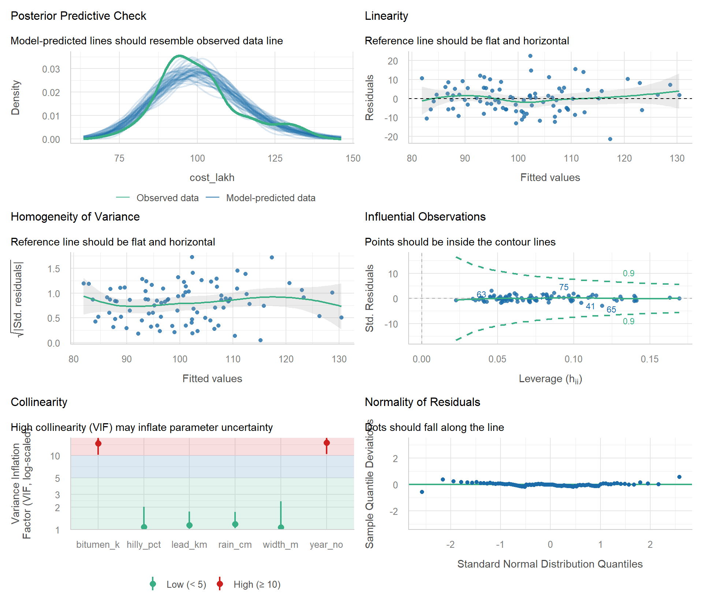
We can notice high collinearity between bitumen_k and year_no in Figure 38.8. It is clearly visible in Figure 38.9. The rate of bitumen rose every year, so the two move together.
road_vars %>%
ggplot(aes(year_no, bitumen_k)) +
geom_point()+
geom_smooth(method = 'lm', formula = 'y~x') +
labs(x = "Year of work (1 is 2019-20)", y = "Bitumen rate (₹ thousand per tonne)") +
theme_bw()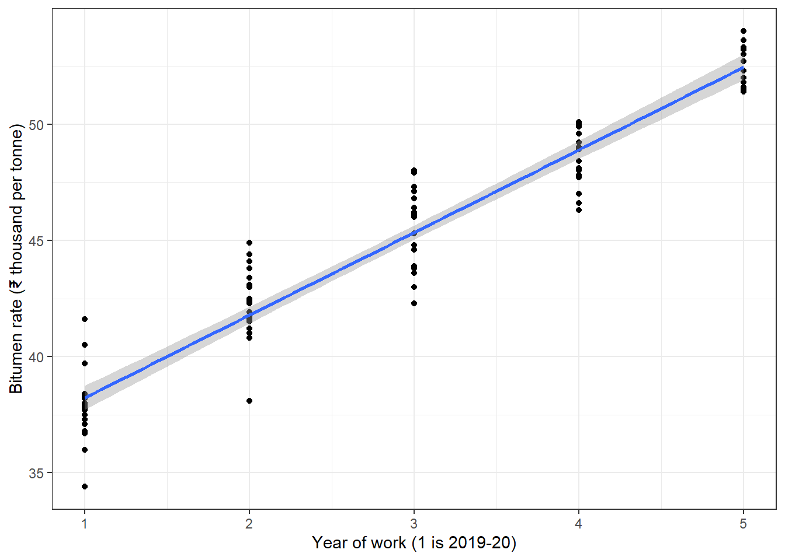
This can also be seen in the correlation plots in Figure 38.10.
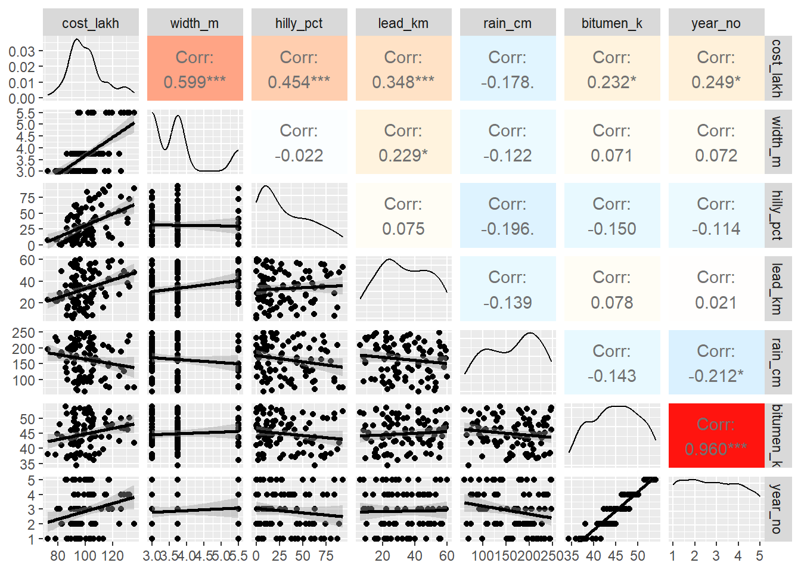
Let us see the VIF of the predictors.
car::vif(ex1) width_m hilly_pct lead_km rain_cm bitumen_k year_no
1.071049 1.089254 1.146704 1.192879 14.623986 14.823085 Both bitumen_k and year_no have a VIF above 5. The other predictors have a VIF close to 1. So let us remove one of the pair. The bitumen rate is the actual cause of the change in cost, while the year only stands in for it. So we remove year_no and re-run the model.
Call:
lm(formula = cost_lakh ~ width_m + hilly_pct + lead_km + rain_cm +
bitumen_k, data = road_vars)
Residuals:
Min 1Q Median 3Q Max
-21.3905 -5.8660 -0.4977 4.5828 21.3593
Coefficients:
Estimate Std. Error t value Pr(>|t|)
(Intercept) 24.84885 9.18404 2.706 0.008254 **
width_m 8.56951 0.99032 8.653 2.96e-13 ***
hilly_pct 0.24861 0.03214 7.734 2.06e-11 ***
lead_km 0.14456 0.05554 2.603 0.010924 *
rain_cm 0.01177 0.01569 0.750 0.455057
bitumen_k 0.65861 0.16176 4.072 0.000105 ***
---
Signif. codes: 0 '***' 0.001 '**' 0.01 '*' 0.05 '.' 0.1 ' ' 1
Residual standard error: 7.694 on 84 degrees of freedom
Multiple R-squared: 0.673, Adjusted R-squared: 0.6535
F-statistic: 34.57 on 5 and 84 DF, p-value: < 2.2e-16Multiple R-squared has dropped a little, to 67.3%. That is expected, since R-squared never rises when we remove a variable. But look at what we gained. The slope of bitumen_k is now 0.659, positive as it should be. Its standard error has fallen from 0.598 to 0.162. Its estimate is now much more precise. Let us also remove rain_cm, whose coefficient is not significant.
Call:
lm(formula = cost_lakh ~ width_m + hilly_pct + lead_km + bitumen_k,
data = road_vars)
Residuals:
Min 1Q Median 3Q Max
-21.8051 -5.5384 -0.2481 4.1768 20.7802
Coefficients:
Estimate Std. Error t value Pr(>|t|)
(Intercept) 28.22990 7.98257 3.536 0.000660 ***
width_m 8.49810 0.98320 8.643 2.85e-13 ***
hilly_pct 0.24337 0.03129 7.777 1.59e-11 ***
lead_km 0.14085 0.05517 2.553 0.012471 *
bitumen_k 0.63868 0.15915 4.013 0.000129 ***
---
Signif. codes: 0 '***' 0.001 '**' 0.01 '*' 0.05 '.' 0.1 ' ' 1
Residual standard error: 7.675 on 85 degrees of freedom
Multiple R-squared: 0.6708, Adjusted R-squared: 0.6553
F-statistic: 43.3 on 4 and 85 DF, p-value: < 2.2e-16Multiple R-squared falls slightly again, to 67.1%. But adjusted R-squared stays almost the same (0.6535 before, 0.6553 now). So rain_cm was adding nothing useful, and the simpler model with four predictors does as well as the one with five. All of its coefficients are significant. When two models explain the data about equally well, we prefer the simpler one.
Now the model reads sensibly. A road 1 metre wider costs about ₹8.5 lakh more per kilometre. Each 10 percentage points of hilly length add about ₹2.4 lakh per kilometre. A rise of ₹1,000 per tonne in the bitumen rate adds about ₹0.64 lakh per kilometre. The auditor can compare these with the schedule of rates. If the model says that terrain or lead adds much more than the rates allow, the estimates deserve a look.
Let us visualise one of the main relationships through a scatter plot.
road_vars %>%
ggplot(aes(hilly_pct, cost_lakh)) +
geom_point() +
geom_smooth(method = 'lm', formula = 'y ~ x', se = FALSE) +
labs(x = "Hilly length (%)", y = "Cost per km (₹ lakh)") +
theme_bw()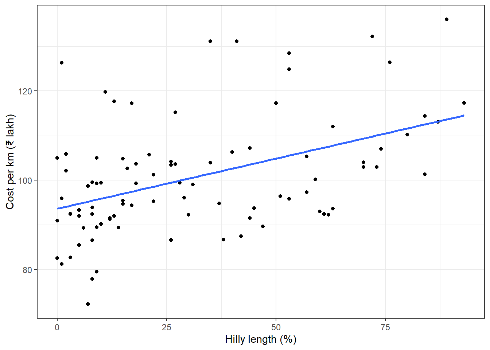
The relationship between hilly length and cost is real, but the points are widely scattered around the line. That is because width, lead and the bitumen rate also vary from work to work. Only the model with all of them together explains about two thirds of the variation. The rest is due to things this data does not have, like soil, culverts and the quality of the contractor’s work.
38.8 Simpson’s paradox
Edward Hugh Simpson, a statistician and former cryptanalyst at Bletchley Park, described this phenomenon in a paper in 1951. It is a classic example of how a regression that leaves out an important variable can mislead. The paradox arises when a trend seen in each subgroup of the data reverses or disappears when the subgroups are combined. We saw a mild form of it in Example 4, where terrain seemed not to matter until we compared offices of the same size.
Example 6. A health department runs 60 hospitals of three types. There are primary health centres (PHCs), community health centres (CHCs) and district hospitals. For each we know the number of patients treated in the year (patients, in thousand) and the cost per patient (cost_pp, in ₹). Does a hospital that treats more patients spend less per patient? Let us try to establish a relationship between the two. See the plots in Figure 38.12.
Code to create the hospital data
set.seed(77)
hosp_types <- c("PHC", "CHC", "District hospital")
hosp <- tibble(type = factor(rep(hosp_types, each = 20), levels = hosp_types)) |>
mutate(
patients = round(case_when(type == "PHC" ~ runif(n(), 5, 15),
type == "CHC" ~ runif(n(), 18, 35),
TRUE ~ runif(n(), 40, 80)), 1),
# within each type, cost per patient falls as the number of patients grows
base = c(PHC = 950, CHC = 1700, "District hospital" = 3300)[as.character(type)],
centre = c(PHC = 10, CHC = 26, "District hospital" = 60)[as.character(type)],
cost_pp = round(base - 18 * (patients - centre) + rnorm(n(), 0, 80))
) |>
select(type, patients, cost_pp)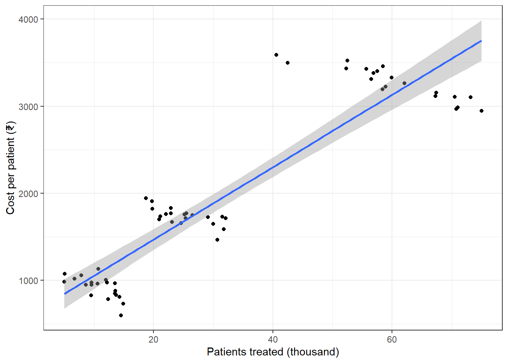
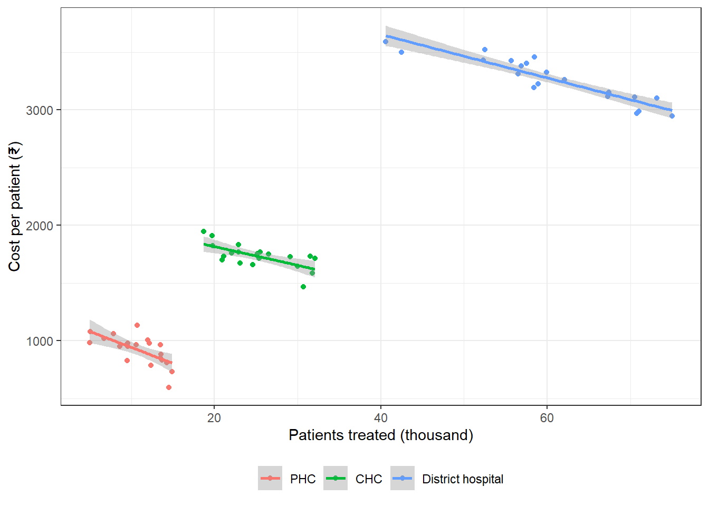
In the left plot, the relationship is positive. Hospitals treating more patients seem to spend more per patient. But when the hidden variable type is exposed (right), we see a negative relationship within each type. A busier PHC costs less per patient than a quieter PHC, and the same holds for CHCs and district hospitals. Let us confirm this with two models.
(Intercept) patients
638.36759 41.53393 (Intercept) patients typeCHC
1126.86491 -19.10646 1086.58582
typeDistrict hospital
3296.68779 Without type, the slope of patients is 41.53. Once type is in the model, it becomes -19.11. The sign has flipped. Type of hospital is a confounding variable here. District hospitals treat more patients and treat costlier cases. An auditor who compared all hospitals together might wrongly conclude that busy hospitals are wasteful. So before finalising a model, we must make sure that we are not missing an important variable. To avoid being misled by Simpson’s paradox, we should
- Identify confounding variables. Think about what else could affect both variables under study.
- Consider all levels. Analyse the data at the subgroup level and at the combined level, and compare.
- Use statistical techniques such as multiple regression, as we just did, to control for confounding variables.
- Report transparently. Clearly state the method, assumptions and limitations of the analysis so that others can evaluate the findings.
Simpson’s paradox is common in audit data. A scheme may show a falling rejection rate in every district, yet a rising rate for the state as a whole, because the mix of districts has changed. Before reporting a trend on combined data, always check it within the main subgroups, like districts, years, or types of contract.
38.9 Audit use case, offices that spend more than expected
We have used regression on audit data throughout this chapter. Let us now put it all together on the question with which we started. Salary expenditure of an office should depend mainly on its staff strength. If an office spends far more than its staff strength explains, it may have ghost employees on its pay roll, or other irregular payments. Regression gives us an expected expenditure for every office. The residual is then the unexplained part. Large positive residuals are our leads.
38.9.1 Our sample data
We create the data of 90 sub-divisional offices (SDOs) of an imaginary department. For each office we have its staff strength, the class of the city where it is located, and its monthly salary expenditure in ₹ lakh. House rent allowance (HRA) is 30%, 20% and 10% of pay in X, Y and Z class cities respectively. So, for the same staff, an office in an X class city spends more.
We have planted a few cases.
- Three offices have salary expenditure inflated by 16%, as if ghost employees were added.
- In one office, the staff strength was keyed in with an extra zero.
As before, new readers may skip the code which creates the data.
Code to create the sample office data
set.seed(2026)
n <- 90
offices <- tibble(
office_id = sprintf("SDO-%02d", 1:n),
city_class = factor(sample(c("X", "Y", "Z"), n, replace = TRUE,
prob = c(0.2, 0.4, 0.4)),
levels = c("Z", "Y", "X")),
staff = sample(8:60, n, replace = TRUE)
) |>
mutate(hra = c(Z = 0.10, Y = 0.20, X = 0.30)[as.character(city_class)],
# about ₹0.85 lakh basic cost per employee, plus HRA, plus noise
salary = round(staff * 0.85 * (1 + hra) + rnorm(n, 0, 1.2), 2)) |>
select(-hra)
# Planted case 1. Ghost employees, salary inflated by 16%
ghost <- c("SDO-17", "SDO-44", "SDO-63")
offices <- offices |>
mutate(salary = if_else(office_id %in% ghost, round(salary * 1.16, 2), salary))
# Planted case 2. Staff strength keyed in with an extra zero
offices <- offices |>
mutate(staff = if_else(office_id == "SDO-81", staff * 10L, staff))head(offices)# A tibble: 6 × 4
office_id city_class staff salary
<chr> <fct> <int> <dbl>
1 SDO-01 Z 11 9.67
2 SDO-02 Z 36 33.8
3 SDO-03 Y 15 14.3
4 SDO-04 Y 45 46.3
5 SDO-05 Z 23 23.6
6 SDO-06 Y 13 14.1 38.9.2 First model, and a surprise
Let us fit a model of salary on staff strength and city class.
Call:
lm(formula = salary ~ staff + city_class, data = offices)
Residuals:
Min 1Q Median 3Q Max
-28.4279 -9.3392 -0.3861 10.1467 25.8925
Coefficients:
Estimate Std. Error t value Pr(>|t|)
(Intercept) 32.16193 2.45813 13.084 < 2e-16 ***
staff 0.09919 0.02362 4.199 6.51e-05 ***
city_classY -0.52788 3.18400 -0.166 0.869
city_classX 1.53420 4.00355 0.383 0.703
---
Signif. codes: 0 '***' 0.001 '**' 0.01 '*' 0.05 '.' 0.1 ' ' 1
Residual standard error: 13.54 on 86 degrees of freedom
Multiple R-squared: 0.1708, Adjusted R-squared: 0.1419
F-statistic: 5.906 on 3 and 86 DF, p-value: 0.001031Something is wrong. Salary expenditure must surely rise steeply with staff strength. Yet the slope of staff is only 0.099 lakh per employee, and R-squared is only 17%. Let us look at the influence of each office, using augment() and Cook’s distance.
# A tibble: 4 × 6
office_id staff salary .fitted .hat .cooksd
<chr> <int> <dbl> <dbl> <dbl> <dbl>
1 SDO-81 600 62.7 91.1 0.948 384.
2 SDO-80 9 7.93 34.6 0.0607 0.0667
3 SDO-84 60 65.5 39.6 0.0609 0.0632
4 SDO-08 58 64.3 39.4 0.0606 0.0580One office, SDO-81, has a Cook’s distance of 384, where the rest are below 0.1. Its staff strength is shown as 600, while no other office has more than 60. Its leverage (.hat) is close to 1, the maximum possible. This single wrong entry has pulled the whole line towards itself. Figure 38.13 shows this.
ggplot(offices, aes(staff, salary)) +
geom_point(aes(color = office_id == "SDO-81"), show.legend = FALSE) +
geom_smooth(method = "lm", formula = "y ~ x", se = FALSE) +
scale_color_manual(values = c("grey40", "red")) +
labs(x = "Staff strength (as recorded)", y = "Monthly salary (₹ lakh)") +
theme_bw()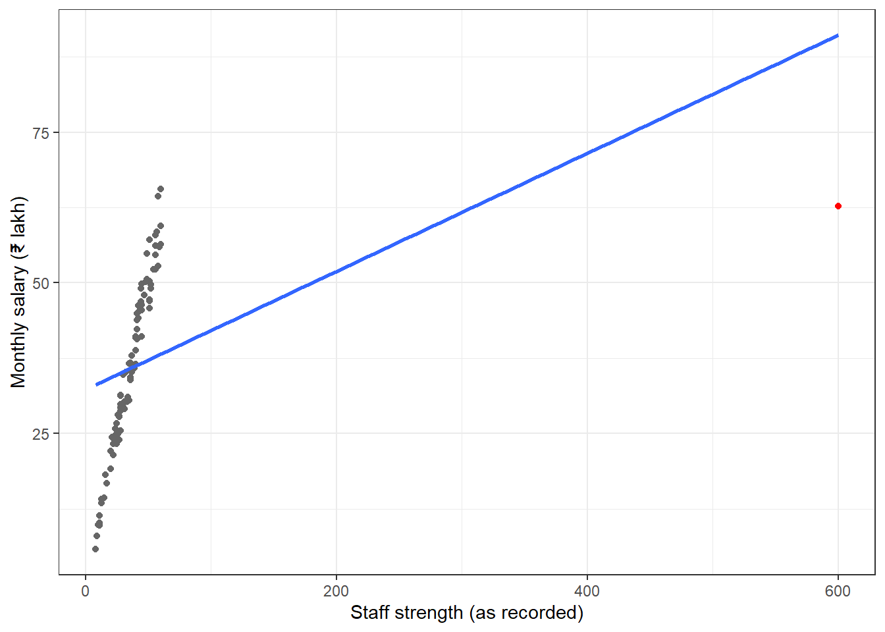
Always check Cook’s distance and leverage before reading the residuals. A single data entry error with an extreme value can spoil the whole model. It then makes genuine outliers look normal, and normal offices look odd. Such an entry is itself an audit finding about the quality of the data.
On checking the records, suppose we find that the office actually has 60 staff. We should correct the entry. Here we simply keep it aside and re-fit.
38.9.3 A better model
HRA is a percentage of pay. So each extra employee in an X class city costs more than an extra employee in a Z class city. In other words, the slope of staff should be different for each city class. This is exactly what an interaction does. Let us fit both the parallel slopes model and the interaction model on the clean data, and compare them.
Call:
lm(formula = salary ~ staff * city_class, data = clean)
Residuals:
Min 1Q Median 3Q Max
-2.6904 -1.0081 -0.0339 0.6564 6.1181
Coefficients:
Estimate Std. Error t value Pr(>|t|)
(Intercept) 0.32799 0.70731 0.464 0.64406
staff 0.93692 0.01751 53.514 < 2e-16 ***
city_classY 0.17978 0.96590 0.186 0.85280
city_classX -1.18493 1.06279 -1.115 0.26810
staff:city_classY 0.07495 0.02482 3.019 0.00337 **
staff:city_classX 0.18740 0.02749 6.816 1.39e-09 ***
---
Signif. codes: 0 '***' 0.001 '**' 0.01 '*' 0.05 '.' 0.1 ' ' 1
Residual standard error: 1.42 on 83 degrees of freedom
Multiple R-squared: 0.9909, Adjusted R-squared: 0.9903
F-statistic: 1798 on 5 and 83 DF, p-value: < 2.2e-16Both interaction terms are significant. For every extra employee, the expected salary goes up by 0.94 lakh in a Z class city, and by 1.12 lakh in an X class city. R-squared is now 99.1%.
To check formally whether the interaction model is better, we can compare the two models with anova(). It tests whether the extra terms reduce the residuals by more than chance would.
anova(off_m2, off_m3)Analysis of Variance Table
Model 1: salary ~ staff + city_class
Model 2: salary ~ staff * city_class
Res.Df RSS Df Sum of Sq F Pr(>F)
1 85 261.20
2 83 167.46 2 93.736 23.23 9.733e-09 ***
---
Signif. codes: 0 '***' 0.001 '**' 0.01 '*' 0.05 '.' 0.1 ' ' 1The p-value is very small, so the interaction model is clearly better. Its residual standard error is 1.42 lakh, against 1.75 lakh for the parallel slopes model. The more accurate our expected values are, the easier it is to spot offices which do not fit.
38.9.4 Finding the offices
Now let us look at the residuals. Raw residuals are in lakh. To judge how unusual each one is, we use the standardised residual (.std.resid). It is the residual divided by its standard error, so it is on a common scale. Under our assumptions, values beyond 3 are very rare, about 3 in 1,000. Let us also calculate the excess expenditure in rupees.
# A tibble: 5 × 7
office_id staff city_class salary .fitted excess .std.resid
<chr> <int> <fct> <dbl> <dbl> <dbl> <dbl>
1 SDO-63 41 Z 44.9 38.7 6.12 4.37
2 SDO-44 28 Z 31.4 26.6 4.79 3.45
3 SDO-79 28 Y 31.3 28.8 2.42 1.73
4 SDO-17 27 Z 27.7 25.6 2.10 1.51
5 SDO-88 30 X 34.8 32.9 1.89 1.37Two offices, SDO-63 and SDO-44, have standardised residuals above 3. Together they spend about ₹10.9 lakh a month, or about ₹1.3 crore a year, more than expected. Both are planted ghost employee cases. They are clearly our first leads.
The third planted office, SDO-17, has a standardised residual of only 1.51. Its excess of ₹2.1 lakh is within the normal variation between offices. Regression cannot separate it from genuine offices. Let us see all of this in Figure 38.14.
augment(off_m3, data = clean) |>
ggplot(aes(.fitted, .std.resid)) +
geom_hline(yintercept = c(-3, 3), linetype = 2, color = "red") +
geom_hline(yintercept = 0, color = "grey50") +
geom_point(aes(color = office_id %in% ghost)) +
geom_text(data = \(d) filter(d, abs(.std.resid) > 3 | office_id %in% ghost),
aes(label = office_id), vjust = -0.8, size = 3) +
scale_color_manual(values = c("grey40", "red"),
labels = c("Other offices", "Planted cases")) +
labs(x = "Expected salary (₹ lakh)", y = "Standardised residual", color = NULL) +
theme_bw() +
theme(legend.position = "bottom")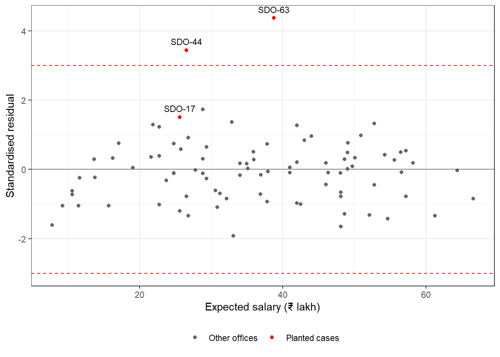
Regression finds only those deviations which are large compared to the normal variation between offices. A small office with a few ghost employees, like SDO-17, can hide in that variation. So a clean result from regression does not prove that there is no fraud. For individual offices, it must be followed by other tests, like matching the pay roll with the attendance and bank account data (see Chapter 32).
Offices which spend much less than expected may also deserve a look. The reason may be vacant posts, salary not paid on time, or expenditure booked under the wrong head. Here no office has a standardised residual below -3.
38.9.5 What the auditor does next
The model has given us 2 leads and one data quality finding. None of them is yet an audit finding. For each lead, we would
- obtain the pay roll of the office for a few months, and count the employees actually paid against the staff strength reported,
- match the employees paid with the attendance register, the service books and the bank accounts into which pay was credited, looking for the same account shared by two employees, or employees who never mark attendance,
- ask the office to explain the excess of about ₹10.9 lakh a month, in writing, and
- record the model, the residuals and the replies in the working papers, so that the selection of these offices can be justified later.
The keying error in the staff strength of SDO-81 should be reported as a weakness in the data, because the same figure may be used elsewhere, for example to sanction posts or to allot funds.
38.10 Uses of regression in audit
We have seen that regression analysis is a powerful tool for an auditor. It may be used, among other things, for the following.
- Detection of anomalies and outliers. As in our office examples, regression gives the expected value of an amount based on its drivers. Large residuals point to transactions or units which do not fit, and these may be errors, irregularities or fraud.
- Analytical procedures. The auditor can estimate what an expenditure should be, say fuel cost from vehicle kilometres, or electricity charges from the connected load, and compare it with what was booked.
- Risk assessment. Units with large unexplained deviations can be ranked and taken up first in the audit plan. This helps the auditor use limited time and staff well.
- Benchmarking. Regression can compare the performance of an organisation with similar ones, after adjusting for size and other factors. Deviations from the expected relationship highlight areas that deserve a closer look. The cost of road works per kilometre, adjusted for width, terrain and lead, is one example.
38.11 A suggested workflow
For any regression analysis in audit, we may follow these steps.
- Understand the drivers. Decide, from knowledge of the business, which variables should explain the amount under audit. Regression only confirms or rejects relationships which make sense.
- Visualise first. Draw scatter plots and box plots to see whether the relationships look linear, and to spot obvious errors.
-
Fit a simple model with
lm(), and read itssummary(). - Check influence. Look at Cook’s distance and leverage. Investigate and correct data entry errors before going further.
-
Check the assumptions with
plot()orcheck_model(). Check multi-collinearity withvif()when there are several predictors, and keep only one predictor from each related pair. -
Improve the model. Add factors and interactions that make business sense. Watch for hidden variables which can reverse a trend. Compare models with adjusted R-squared or
anova(). -
Flag the residuals. Use
augment()and pick the units with large standardised residuals. Quantify the excess in rupees. - Verify with records. Examine the documents of the flagged units before drawing any conclusion.
A regression model shows association, not cause. A large residual means only that a unit does not fit the pattern of the others. It is a lead, not a finding. There may be a genuine reason which the model does not know about. Always examine the records before reporting.
38.12 Where next
Linear regression predicts a number. When the audit question has a yes or no answer, like whether a claim is irregular, we use logistic regression, in Chapter 39. When many indicators are related to each other, Chapter 43 shows how to combine them before modelling.
38.13 Summary of functions used
| Function | Package | What it does |
|---|---|---|
lm() |
base R (stats) | Fits a linear regression model |
summary() |
base R | Shows coefficients, p-values, R-squared and F-test of a model |
coef() |
base R (stats) | Gives the coefficients of a model |
sigma(), cooks.distance()
|
base R (stats) | Gives the residual standard error and Cook’s distance |
contrasts(), model.matrix()
|
base R (stats) | Shows how factors are converted to dummy variables |
factor() |
base R | Converts a variable to a factor, also inside a formula |
anova() |
base R (stats) | Compares two nested models |
augment() |
broom | Gives fitted values, residuals, leverage and Cook’s distance as a data frame |
check_model() |
performance | Draws all diagnostic plots together, with guidance |
vif() |
car | Calculates the variance inflation factor of each predictor |
ggpairs() |
GGally | Draws a matrix of scatter plots and correlations |
geom_parallel_slopes() |
moderndive | Draws a parallel slopes model in ggplot2 |